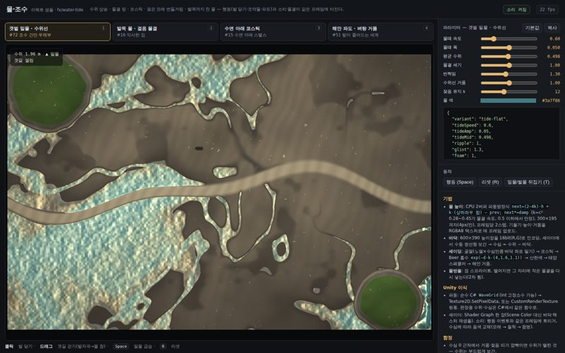
물·조수
수위 상승, 물결 링, 코스틱, 젖은 모래 번들거림, 발목까지 찬 물
컨셉 101개가 공통으로 필요로 하는 효과를 효과별로 모았다. 각 샘플은 단일 HTML(Canvas2D/WebGL + WebAudio)로 파일에서 바로 열린다. 변형마다 쓰는 컨셉이 붙어 있고, 조작→시각·소리 피드백, 수치 슬라이더(게임 이식용 JSON), Unity 이식 메모가 있다. 헤드리스 소프트웨어 렌더링에서만 확인했다 — 실제 GPU 프레임과 소리의 만족도는 사람이 판정해야 한다.

수위 상승, 물결 링, 코스틱, 젖은 모래 번들거림, 발목까지 찬 물
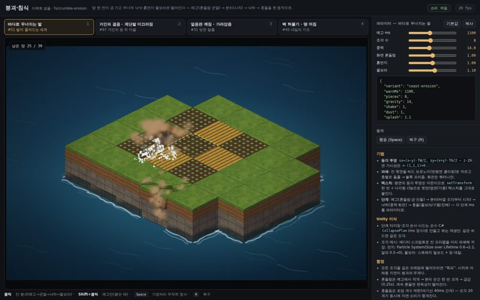
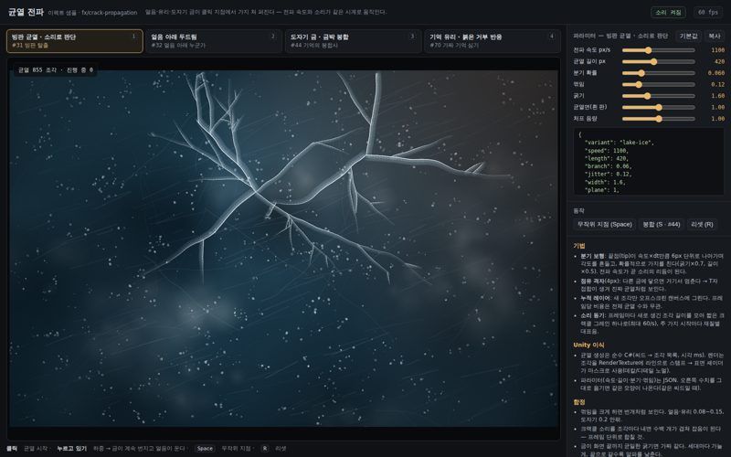
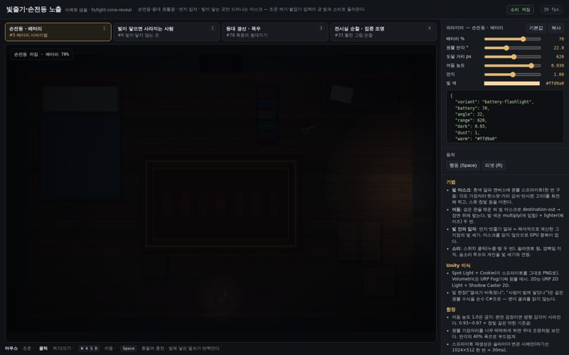
손전등·등대 원뿔광, 먼지 입자, 빛이 닿는 곳만 드러나는 마스크
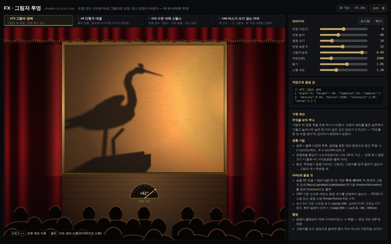
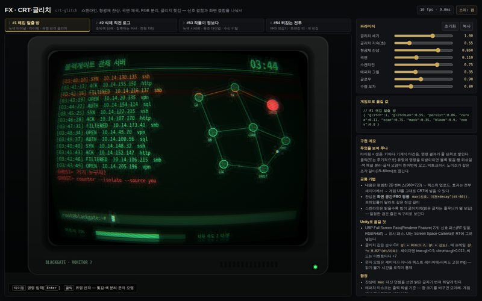
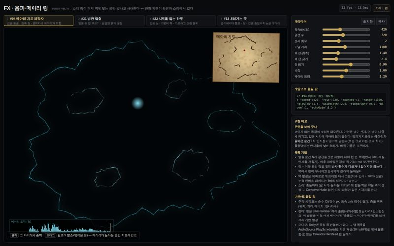
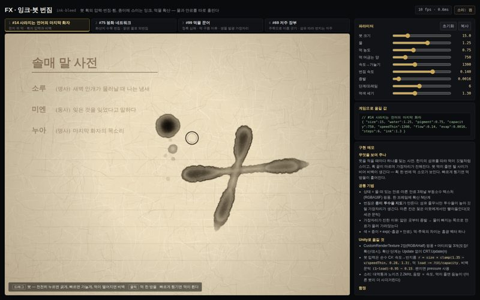
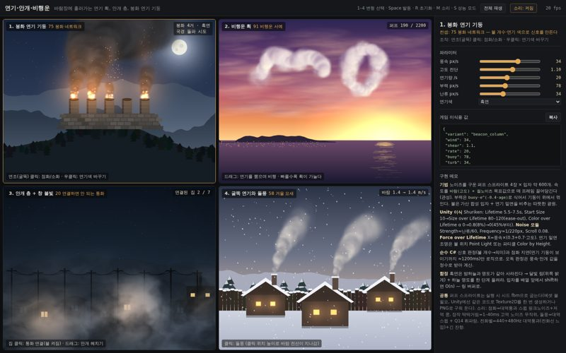
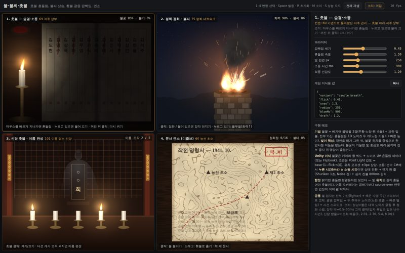
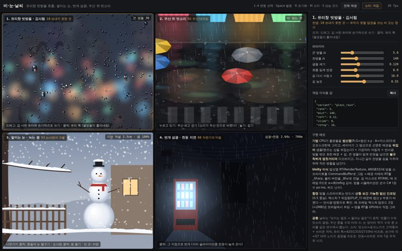
유리창 빗방울 흐름, 쌓이는 눈, 번개 섬광, 우산 위 빗소리
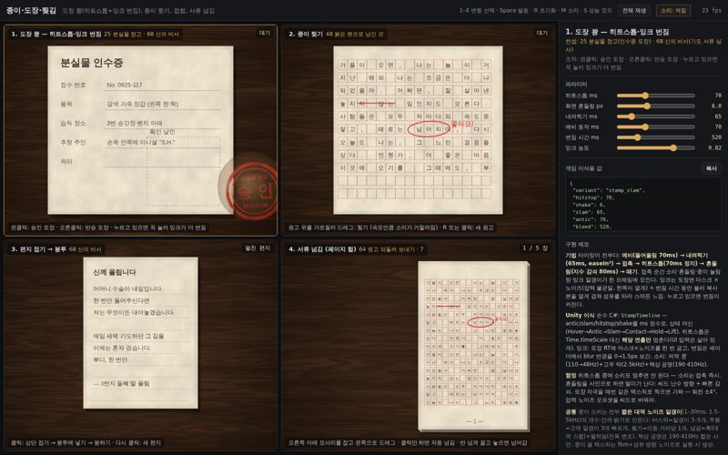
도장 쾅(히트스톱+잉크 번짐), 종이 찢기, 접힘, 서류 넘김
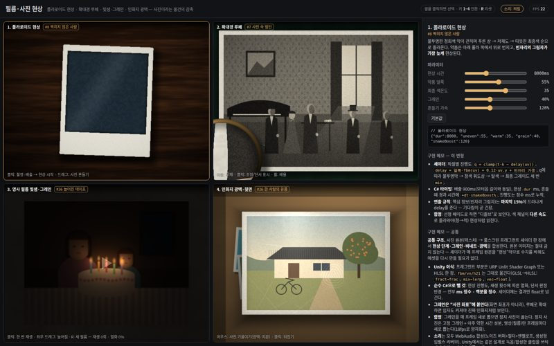
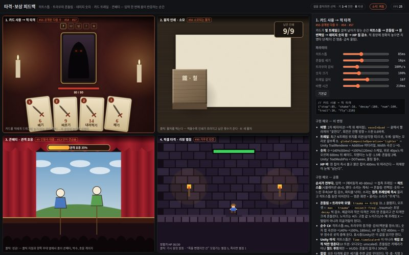
히트스톱, 화면 흔들림, 데미지 숫자, 카드 사용 트레일, 콘페티
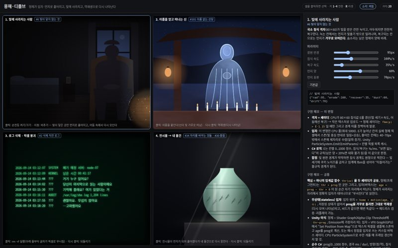
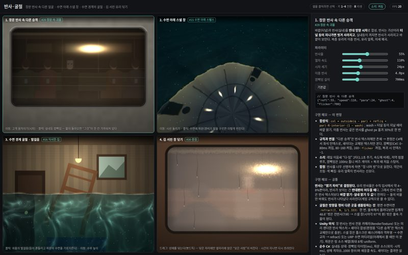
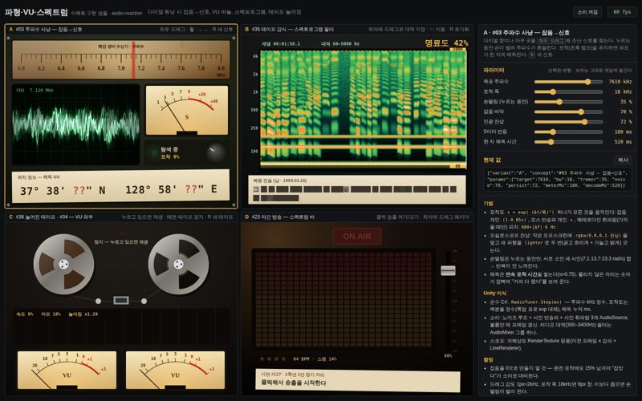
다이얼 튜닝 시 잡음→신호, VU 바늘, 스펙트로그램, 테이프 늘어짐
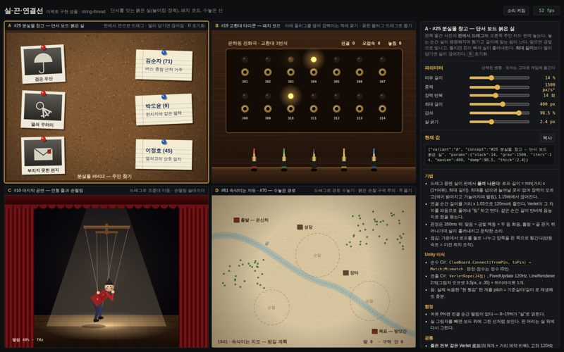
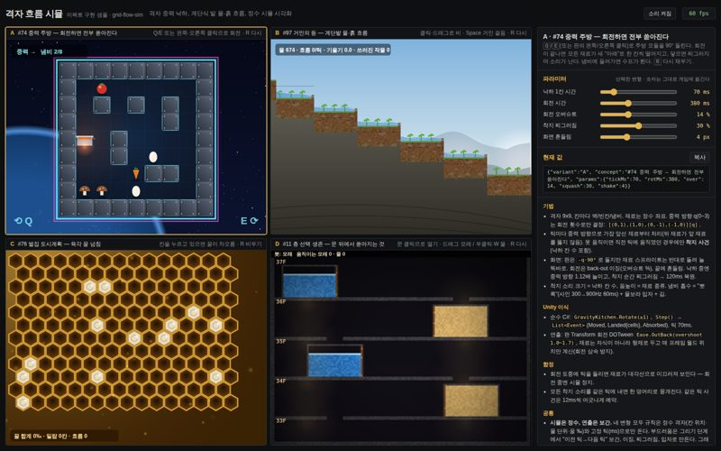
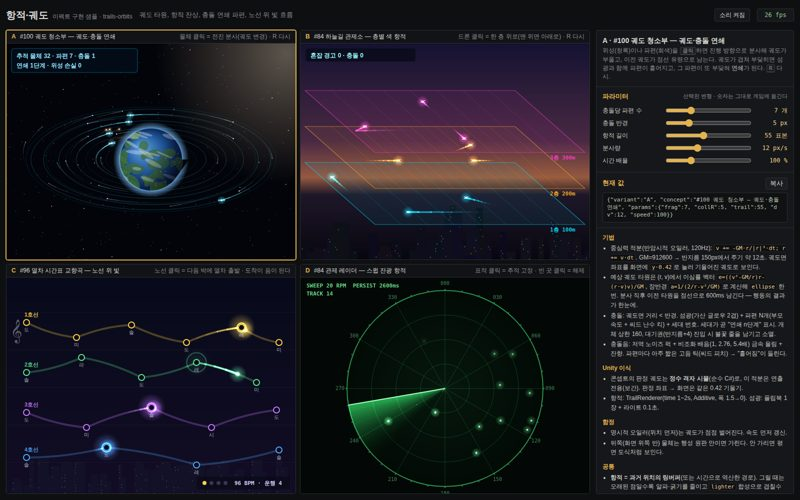
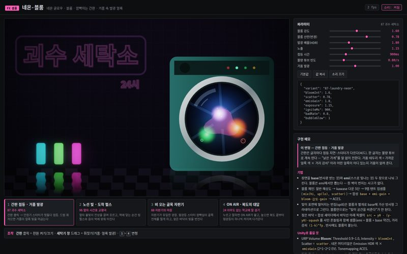
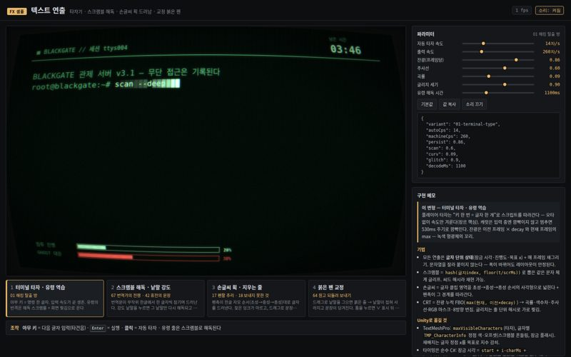
타자기, 스크램블 해독, 손글씨 획 드러남, 교정 붉은 펜 삽입
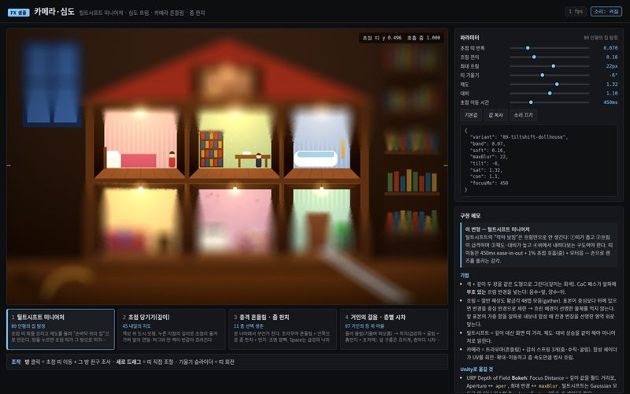
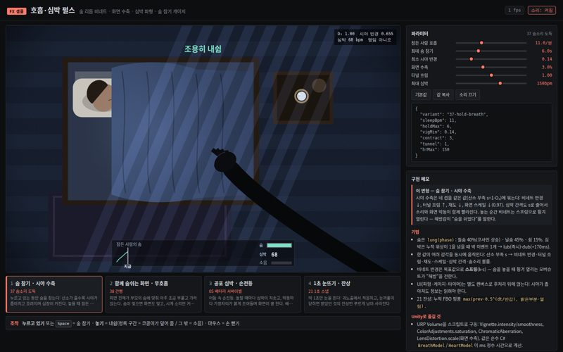